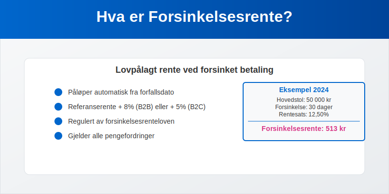
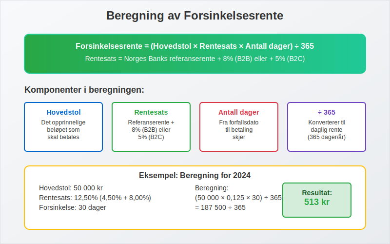
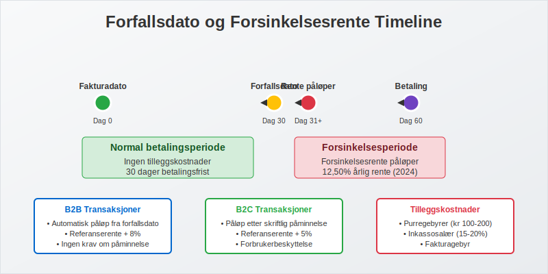

Forsinkelsesrente, også kjent som morarente, er en lovpålagt rente som påløper når en betaling ikke skjer innen avtalt forfallsdato. Dette er en viktig del av norsk kontraktsrett og regnskapsføring som beskytter kreditorer mot økonomiske tap ved forsinket betaling. Forsinkelsesrente gjelder for alle typer pengefordringer, inkludert fakturaer, lån og andre betalingsforpliktelser.

Seksjon 1: Lovgrunnlag og Regulering
Forsinkelsesrente er regulert i forsinkelsesrenteloven av 1976, som fastslår at rente skal betales fra forfallsdato uten at kreditor trenger å sende påkrav. Dette gjør forsinkelsesrente til en automatisk rettighet som ikke krever særskilt avtale mellom partene.
Hovedprinsipper i Forsinkelsesrenteloven
- Automatisk påløp: Renten påløper automatisk fra forfallsdato
- Ingen krav om påminnelse: Kreditor trenger ikke sende betalingsoppfordring for at renten skal påløpe
- Gjelder alle pengefordringer: Omfatter både kommersielle og private transaksjoner
- Kan ikke fravikes til skade for debitor: Avtaler som gir lavere rente enn lovens minimum er ugyldige
Seksjon 2: Beregning av Forsinkelsesrente
Forsinkelsesrenten beregnes basert på Norges Banks referanserente pluss et lovfastsatt tillegg. Satsen justeres to ganger årlig - 1. januar og 1. juli.

Gjeldende Satser (2024)
| Periode | Referanserente | Tillegg | Total Forsinkelsesrente |
|---|---|---|---|
| Jan-Jun 2024 | 4,50% | 8,00% | 12,50% |
| Jul-Des 2024 | 4,50% | 8,00% | 12,50% |
Beregningsformel
Forsinkelsesrente = (Hovedstol × Rentesats × Antall dager) ÷ 365
Eksempel på beregning:
- Hovedstol: 50 000 kr
- Forsinkelse: 30 dager
- Rentesats: 12,50%
- Forsinkelsesrente: (50 000 × 0,125 × 30) ÷ 365 = 513 kr
Seksjon 3: Når Påløper Forsinkelsesrente?
Forsinkelsesrente påløper fra forfallsdato og frem til betalingen faktisk skjer. Det er viktig å forstå når forfallsdato inntreffer for ulike typer fordringer.
Forfallsdato for Fakturaer
For kommersielle fakturaer gjelder følgende regler:
- Avtalt betalingsfrist: Når dette er spesifisert på fakturaen
- 30 dager fra mottak: Standard forfallstid hvis ikke annet er avtalt
- Umiddelbar betaling: For kontantsalg og enkelte tjenester

Spesielle Situasjoner
- Lønn: Forfaller siste arbeidsdag i måneden
- Husleie: Vanligvis forskuddsbetaling (1. i måneden)
- Leverandørfakturaer: I henhold til betalingsbetingelser
Seksjon 4: Regnskapsføring av Forsinkelsesrente
Forsinkelsesrente må behandles korrekt i regnskapet både for kreditor og debitor. Dette påvirker driftsinntekter og driftskostnader.
For Kreditor (Den som Mottar Rente)
Kontering av forsinkelsesrente som inntekt:
| Konto | Beskrivelse | Debet | Kredit |
|---|---|---|---|
| 1500 | Kundefordringer | X | |
| 8050 | Renteinntekter | X |
For Debitor (Den som Betaler Rente)
Kontering av forsinkelsesrente som kostnad:
| Konto | Beskrivelse | Debet | Kredit |
|---|---|---|---|
| 8150 | Rentekostnader | X | |
| 1920 | Leverandørgjeld | X |
MVA-behandling
Viktig: Forsinkelsesrente er ikke gjenstand for merverdiavgift, verken for kreditor eller debitor.
Seksjon 5: Praktisk Håndtering av Forsinkelsesrente
Effektiv håndtering av forsinkelsesrente krever systematiske rutiner og god debitoroppfølging.
Rutiner for Kreditorer
- Automatisk beregning: Implementer systemer som automatisk beregner påløpt rente
- Regelmessig fakturering: Send rentekrav månedlig eller kvartalsvis
- Dokumentasjon: Oppretthold god dokumentasjon av alle rentekrav
- Oppfølging: Kombiner rentekrav med betalingspåminnelser
Rutiner for Debitorer
- Overvåk forfallsdatoer: Bruk AvtaleGiro for automatisk betaling
- Prioriter betalinger: Betal fakturaer med høyest rentesats først
- Kommuniser proaktivt: Kontakt kreditor ved betalingsproblemer
- Budsjetter rentekostnader: Inkluder potensielle rentekostnader i budsjettering
Seksjon 6: Forsinkelsesrente vs. Andre Gebyrer
Det er viktig å skille mellom forsinkelsesrente og andre typer gebyrer som kan påløpe ved forsinket betaling.
Sammenligning av Kostnader ved Forsinket Betaling
| Type Kostnad | Lovgrunnlag | Beregning | Maksimum |
|---|---|---|---|
| Forsinkelsesrente | Forsinkelsesrenteloven | Referanserente + 8% | Ingen |
| Fakturagebyr | Avtalefrihet | Faktiske kostnader | Rimelig forhold |
| Purregebyr | Inkassoloven | Fastsatte satser | Kr 100-200 |
| Inkassosalær | Inkassoloven | Prosent av hovedstol | 15-20% |
Kumulativ Effekt
Alle disse kostnadene kan påløpe samtidig, noe som gjør forsinket betaling svært kostbart:
- Måned 1: Forsinkelsesrente påløper
- Måned 2: Purregebyr + fortsatt rente
- Måned 3: Inkassosalær + fortsatt rente
- Måned 4+: Alle kostnader fortsetter å påløpe
Seksjon 7: Særlige Regler for Forbrukerkjøp
For forbrukerkjøp (B2C-transaksjoner) gjelder spesielle regler som beskytter forbrukere mot urimelige rentekostnader.
Forbrukerkjøpsloven
- Lavere rentesats: Referanserente + 5% (ikke 8%)
- Krav om påminnelse: Forsinkelsesrente påløper først etter skriftlig påminnelse
- Rimelighetsvurdering: Domstolene kan sette ned urimelige rentekrav
Sammenligning B2B vs. B2C
| Aspekt | B2B (Næringsdrivende) | B2C (Forbruker) |
|---|---|---|
| Rentesats | Referanserente + 8% | Referanserente + 5% |
| Påløp | Fra forfallsdato | Etter påminnelse |
| Beskyttelse | Begrenset | Utvidet |
Seksjon 8: Internasjonale Aspekter
Ved handel med utenlandske parter må man være oppmerksom på at forsinkelsesrente-reglene kan variere betydelig mellom land.
EU-direktiv om Forsinket Betaling
EU har et direktiv som harmoniserer reglene for forsinkelsesrente i kommersielle transaksjoner:
- Minimum rentesats: ECB-rente + 8%
- Automatisk påløp: Fra forfallsdato
- Kompensasjon: Rett til kompensasjon for innkrevingskostnader
Praktiske Råd for Internasjonal Handel
- Spesifiser lovvalg: Avtal hvilke lands regler som skal gjelde
- Klargjør betalingsbetingelser: Vær eksplisitt om forfallsdato og rente
- Vurder valutarisiko: Forsinkelsesrente i fremmed valuta kan påvirke valutarisiko
Seksjon 9: Digitale Løsninger og Automatisering
Moderne teknologi gjør det enklere å håndtere forsinkelsesrente automatisk og effektivt.
ERP-systemer og Automatisering
Moderne ERP-systemer kan automatisere hele prosessen:
- Automatisk beregning: Daglig oppdatering av påløpt rente
- Automatisk fakturering: Månedlige rentekrav sendes automatisk
- Integrasjon med regnskap: Automatisk bilagsføring
- Rapportering: Oversikt over totale renteinntekter/-kostnader
Elektronisk Fakturering og Oppfølging
Elektronisk fakturering kan redusere forsinkelser:
- Raskere levering: eFaktura når mottaker umiddelbart
- Automatiske påminnelser: Systemet sender påminnelser automatisk
- Bedre sporbarhet: Full oversikt over fakturaens status
Seksjon 10: Skattemessige Konsekvenser
Forsinkelsesrente har viktige skattemessige konsekvenser som må håndteres korrekt.
For Kreditor (Mottaker av Rente)
- Skattepliktig inntekt: Forsinkelsesrente er fullt skattepliktig
- Periodisering: Renten skal inntektsføres når den påløper
- Dokumentasjon: Krav om god dokumentasjon for skattemyndighetene
For Debitor (Betaler av Rente)
- Fradragsberettiget: Forsinkelsesrente er normalt fradragsberettiget
- Periodisering: Kostnaden skal kostnadsføres når den påløper
- Begrensninger: Enkelte begrensninger for private gjeldsforhold
Regnskapsføring og Skatt
Det er viktig at regnskapsføringen samsvarer med skattemessig behandling for å unngå problemer ved skatterevisjoner.
Seksjon 11: Juridiske Aspekter og Tvister
Forsinkelsesrente kan bli gjenstand for juridiske tvister, særlig når det gjelder beregning og rimelighetsvurderinger.
Vanlige Tvisteområder
- Forfallsdato: Uenighet om når betalingsfristen utløp
- Beregningsgrunnlag: Hvilke beløp som skal forrentes
- Avbrudd i renteløpet: Om betalinger eller avtaler avbryter renteløpet
- Rimelighetsvurdering: Om rentekravet er urimelig høyt
Forebygging av Tvister
- Klare avtaler: Spesifiser betalingsbetingelser tydelig
- God dokumentasjon: Oppretthold komplett dokumentasjon
- Proaktiv kommunikasjon: Kommuniser tidlig ved betalingsproblemer
- Profesjonell håndtering: Bruk etablerte rutiner for oppfølging
Seksjon 12: Sammenheng med Øvrig Regnskapsføring
Forsinkelsesrente påvirker flere områder av regnskapsføringen og må ses i sammenheng med øvrig finansregnskap.
Påvirkning på Nøkkeltall
Forsinkelsesrente påvirker viktige regnskapstall:
- Driftsresultat: Renteinntekter/-kostnader påvirker resultatet
- Arbeidskapital: Påløpt rente øker fordringer/gjeld
- Likviditet: Rentekostnader reduserer tilgjengelig likviditet
Integrasjon med Debitorhåndtering
Forsinkelsesrente er en integrert del av debitorhåndtering og påvirker:
- Kredittvurdering: Kunders betalingshistorikk inkludert rentekostnader
- Risikostyring: Vurdering av kredittrisiko og tap på fordringer
- Kundeoppfølging: Systematisk oppfølging av forfalte fordringer
Effektiv håndtering av forsinkelsesrente krever derfor en helhetlig tilnærming som integrerer juridiske, regnskapsmessige og praktiske aspekter. Ved å implementere gode rutiner og bruke moderne teknologi kan bedrifter minimere både kostnader og administrative byrder knyttet til forsinket betaling.